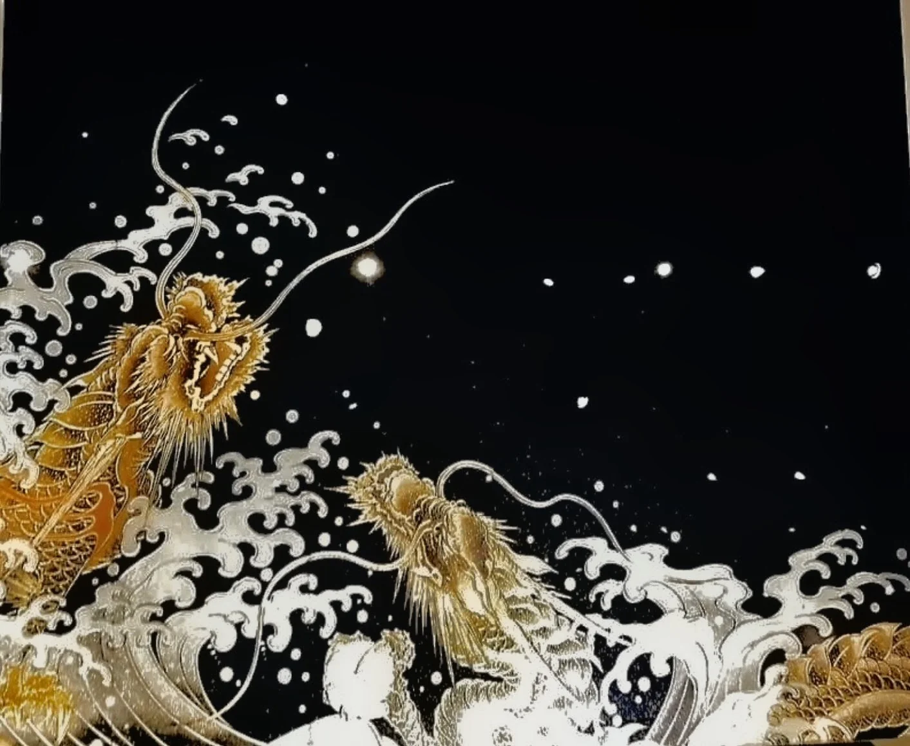
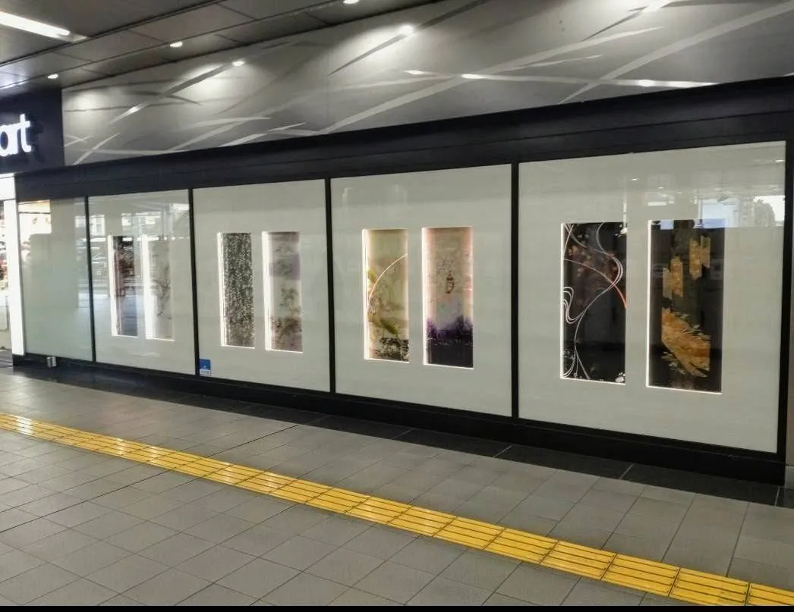
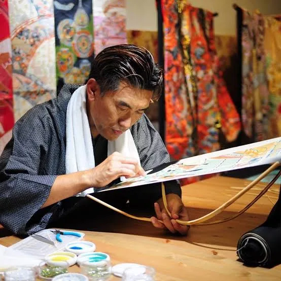
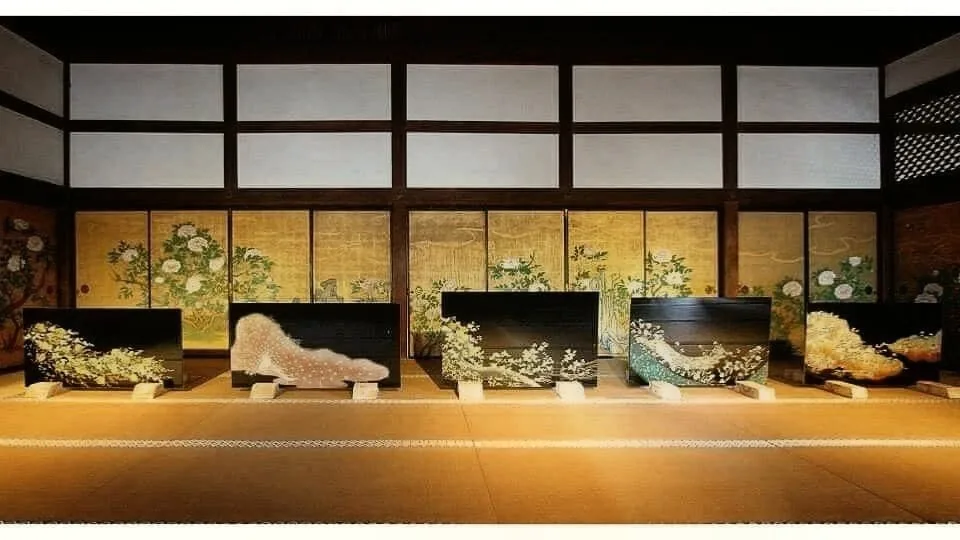

神龍WAGLASS / JAPAN
京友禅や西陣織の記憶を硝子に封じ込める「和硝子」。横田満康は、日本の伝統を保存するのではなく、現代の空間で再び生きる作品へと変えていきます。作品はオンラインでご購入いただけます。
和硝子は、京友禅や西陣織の帯そのものをガラスに封じ込める横田満康の表現です。模様を模倣するのではなく、本物の布が持つ時間、職人技、記憶を作品の中へ残します。硝子であるがゆえに、毎日見る方向によって見え方が変わり、映し込む風景も移ろいます。自然と融合するアートとして、背景の桜や紅葉など、日本の四季を感じることができます。
硝子であるがゆえに、毎日見る方向によって見え方が変わり、風景が移ろう。
作品単体で完結せず、置かれた空間や自然とひとつになる表現。
背景を映すことで、桜や紅葉など、日本の四季を感じることができる。
京友禅や西陣織など、実物の日本伝統素材を起点にする。
素材の記憶を残しながら、光と空間の現代作品へ変換する。
素材、構成、光の表情が異なる、コレクターのための唯一の作品。


建築家として空間を考え、着物デザインを学び、そこから和硝子を生み出した横田満康。2013年から和硝子を本格制作し、作品は京都、名古屋、東京、米国、アジアへと広がってきました。作品を単体で終わらせず「どこに、どう存在させるか」まで考えられることが、横田作品の大きな特徴です。
横田の作品は、京都からニューヨーク、オースティン、パリ、ドバイへと渡ってきました。現在はオンライン販売を基本としています。

2014年2月、京都・大覚寺の宸殿（寝殿造り）にて和硝子の個展を開催しました。
販売はオンラインが基本です。素材・サイズ・制作年・来歴・配送条件を明記し、一点物を安心して迎えていただけます。
富岳三十六景「神奈川沖浪裏」を硝子で完全再現。手すき和紙・金の縁取り・ダイヤモンド25石。

辻が花文様の藤を、金銀青緑の糸と京金彩で織り上げた一点物。

京金彩で金の桜を表現。銀の枝とぼかし加工が華やぎを深める一点物。
すべての作品は一点物。固有の作品番号で管理されています。
署名・落款・真作証明書・来歴記録が作品に付属します。
美術品専用の梱包と保険、追跡可能な配送で世界へお届けします。
ご購入前のオンライン相談・設置のご相談を承ります。
基本はオンライン販売です。ご購入前のご相談もオンラインで承ります。
作品のご購入、オーダー、空間提案、プレス・ギャラリーのご相談をオンラインで承ります。送信内容は担当が確認のうえご返信します。